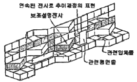
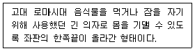
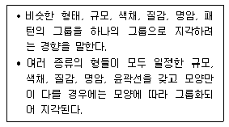
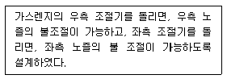
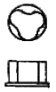
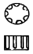
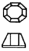
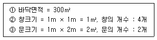
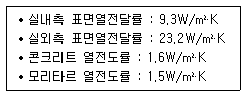

실내건축기사(구) (2011-06-12 기출문제)
1과목: 실내디자인론
1. 부엌작업대의 가장 효율적인 배치 순서는?
- 준비대-조리대-개수대-가열대-배선대
- 준비대-개수대-조리대-가열대-배선대
- 준비대-가열대-조리대-개수대-배선대
- 준비대-조리대-개수대-배선대-가열대
(정답률: 78%)

2. 아동실을 더욱 생동감 있게 만들어 주려 할 때 어느 디자인 원리를 이용하면 가장 효율적인가?
- 리듬
- 조화
- 통일
- 균형
(정답률: 87%)
3. 점의 성질에 대한 설명 중 옳지 않은 것은?
- 점이 연속적으로 놓여지면 선으로 느껴진다.
- 공간 속의 두 점 중 큰 쪽으로 주의력이 쏠린다.
- 나란히 있는 점의 간격에 따라 집합, 분리의 효과를 얻는다.
- 점은 어떤 형상을 규정하거나 한정하고, 면적을 분할한다.
(정답률: 84%)
4. 실내디자인의 프로그래밍(programming) 전개과정으로 가장 알맞은 것은?
- 분석→종합→목표설정→조사→설정
- 목표설정→분석→조사→종합→결정
- 목표설정→조사→분석→종합→결정
- 조사→분석→결정→종합→목표설정
(정답률: 69%)
5. 다음 중 실내디자인에 대한 설명으로 가장 부적절한 것은?
- 실내디자인은 사용자의 다양한 요구를 반영하여야 한다.
- 실내디자인 작업은 건축계획의 초기 단계에서부터 병행하는 것이 바람직하다.
- 인간에게 적합한 환경, 즉 생활공간의 쾌적성을 추구하고자 하는 것이 실내디자인의 과제이다.
- 도시가로와의 연계성, 건물 진입시 효과, 건물 전체의 형태등은 건축계획의 영역으로 실내디자인에서는 고려하지 않는다.
(정답률: 84%)
6. 디자인에서 형태의 부분과 부분, 부분과 전체 사이의 크기, 모양 등의 시각적 질서, 균형을 결정하는데 유효하게 사용되는 디자인 원리는?
- 강조
- 비례
- 리듬
- 대비
(정답률: 75%)
7. 기업체가 자사제품의 홍보, 판매 촉진 등을 위해 제품 및 기업에 관한 자료를 소비자들에게 직접 호소하여 제품의 우위성을 인식시키고자 하는 전시공간은?
- 캐럴(carrel)
- 애리나(arena)
- 쇼륨(showroom)
- 랜드스케이프(landscape)
(정답률: 79%)
8. 치수계획에 있어 적정치수를 설정하는 방법이 아닌것은? (α : 적정치수를 구하기 위한 조정치수)
- 평균치 - α
- 최소치 + α
- 목표치 ± α
- 최대치 - α
(정답률: 60%)
9. 실내공간 구성요소 중 벽(wall)에 대한 설명으로 옳지 않은 것은?
- 공간을 에워싸는 수직적 요소이다.
- 수직방향을 차단하여 공간을 형성한다.
- 외부세계에 대한 침입 방어의 기능을 갖는다.
- 기구, 조명 등 실내에 놓여지는 설치물에 대한 배경적 요소가 된다.
(정답률: 72%)
10. 천장에 매달려 조명하는 조명방식으로 조명기구 자체가 및을 발하는 악세서리 역할을 하는 것은?
- 코브(cove)
- 브라켓(bracket)
- 펜던트(pendant)
- 코니스(cornice)
(정답률: 77%)
11. 연속적인 주제를 시각적인 연속성을 가지고 다음 그림과 같이 선형으로 연출하는 전시방법은?

- 디오라마전시
- 파노라마전시
- 아일랜드전시
- 하모니카전시
(정답률: 76%)
12. 실내설계 프로세스 중 디자인 계획단계의 결과물이 아닌 것은?
- 디자인 컨셉
- 색채 이미지
- 실내공간의 이미지
- 실내공간의 조도 및 조명 개수
(정답률: 74%)
13. 다음 설명에 알맞은 가구의 종류는?

- 세티(settee)
- 카우치(couch)
- 체스터필드(chesterfield)
- 라운지소파(lounge sofa)
(정답률: 60%)
14. 다음 중 구성 요소들을 공간 안에 배치(Lay out)할 때 고려해야 할 사항과 가장 거리가 먼 것은?
- 가구 배치 계획
- 공간 상호간의 연계성
- 공간별 재료 마감 계획
- 출입 형식 및 동선 체계
(정답률: 75%)
15. 균형의 유형 중 대칭적 균형의 의미로 가장 알맞은 것은?
- 가장 완전한 균형의 상태로 공간에 질서를 주기가 용이하다.
- 비정형균형이라고도 하며 다양한 긴장감의 표현이 가능하다.
- 자연스러우며 풍부한 개성을 표현할 수 있어 능동의 균형이라고도 한다.
- 물리적으로 불균형이지만 시각상 힘의 정도에 의해 균형을 이루는 것을 말한다.
(정답률: 70%)
16. 창(window)에 대한 설명으로 옳은 것은?
- 고정창은 크기와 형태에 제약없이 자유로이 디자인 할 수 있다.
- 미서기창은 경사지게 열리므로 비나 눈이 올 때도 창을 열 수 있는 장점이 있다.
- 여닫이창은 2짝 이상의 창문이 좌우로 개폐되며, 개폐에 있어 실내 공간을 고려할 필요가 없다.
- 윈도우 월(window wall)은 밖으로 창과 함께 평면이 돌출된 형태로 아늑한 구석공간을 형성할 수 있다.
(정답률: 59%)
17. 다음 설명이 나타내는 형태의 지각 심리는?

- 유사성
- 접근성
- 연속성
- 폐쇄성
(정답률: 65%)
18. 질감에 대한 설명으로 옳은 것은?
- 재료표면이 빛을 흡수하는 정도는 질감에 영향을 미치지 않는다.
- 시각으로 인식되는 질감과 촉각으로 인식되는 질감에는 차이가 없다.
- 효과적인 질감 표현을 위해서는 색채와 조명을 동시에 고려해야 한다.
- 질감은 재료의 표면상태에 대한 느낌을 흡음성과는 상관관계가 없다.
(정답률: 87%)
19. 디자인의 모티브 가운데 인간과 동물, 식물과 같은 살아있는 생물로부터 유추하는 것과 관련된 접근방법은?
- 기하학적 모티브
- 토속적 모티브
- 유기적 모티브
- 변성적 모티브
(정답률: 73%)
20. 상점계획에 대한 설명 중 옳지 않은 것은?
- 상점내의 고객 동선은 길고 원활하게 하는 것이 좋다.
- 실내 분위기 연출에 보색효과를 사용할 경우 활발하고 개성적인 분위기를 연출할 수 있다
- 상점 출입구에 대한 인식성을 강화하기 위해 출입구 부분에는 요철 및 경사, 계단 등을 설치한다.
- 피난에 관련된 동선은 고객이 쉽게 인지할 수 있도록 위치 설정 및 접근성을 고려한 계획이 요구된다.
(정답률: 80%)
2과목: 색채학
21. 아파트 건축물의 색채기획시 고려해야 할 사항이 아닌 것은?
- 개인적인 기호에 의하지 않고 객관성이 있어야 한다.
- 주변 환경과 관계없이 독특한 디자인으로 색채 조절을 한다.
- 전체적으로 질서가 있어야 하며 적당한 변화가 있어야 한다.
- 주거민을 위한 편안한 디자인이 되어야 한다.
(정답률: 78%)
22. KS산업표준에 있지 않는 표색계는?
- NCS 표색계
- 먼셀 표색계
- L*a*b* 표색계
- X Y Z 표색계
(정답률: 37%)
23. 색의 온도감에 관한 설명 중 옳은 것은?
- 빨강, 노란색은 한색이다.
- 무채색에서 높은 명도의 색은 난색이다.
- 자주, 청록색은 중성색이다.
- 녹색은 중성색이고, 주황색은 난색이다.
(정답률: 58%)
24. 한국의 오방색과 방향의 연결로 옳은 것은?
- 청색-동
- 적색-서
- 황색-남
- 백색-북
(정답률: 65%)
25. 오스트발트 색상환은 무엇을 기본으로 하여 만들어 졌는가?
- 먼셀의 5원색
- 뉴턴의 프리즘
- 헤링의 4원색
- 영∙헬름홀츠의 3원색
(정답률: 48%)
26. 정량적(定量的)색채 조화론으로 1944년에 발표되었으며, 고전적인 색채조화와 기하학적 공식화, 색채조화의 면적, 색채조화에 적용되는 심미도 등의 내용으로 구성되어 있는 것은?
- 쉐브릴(M.E. Chevreul)의 조화론
- 져드(judd)의 조화론
- 그레이브스(M. Graves)의 조화론
- 문(P. Moon)과 스펜서(D.E. Spencer)의 조화론
(정답률: 67%)
27. 무대 조명의 혼색방법과 관계가 깊은 것은?
- 병치가법혼색
- 동시가법혼색
- 계시가법혼색
- 평균가법혼색
(정답률: 49%)
28. 명소시에서 암소시로 이행할 때 붉은 색은 어둡게되고 녹색과 파랑은 상대적으로 밝게 보이는 현상은?
- 베졸드 현상
- 맥스웰 현상
- 스펙트럼 현상
- 푸르킨예 현상
(정답률: 75%)
29. 영∙헬름홀츠의 3원색설에 따라 녹색과 빨강의 시세포가 동시에 흥분할 때 생기는 색각은?
- 시안(cyan)
- 마젠타(magenta)
- 검정(black)
- 노랑(yellow)
(정답률: 59%)
30. 오스트발트의 조화 배열 중 등흑색 조화에 해당하는 색으로 연결된 것은?
- ie-ia-pc
- ea-ie-ni
- ge-le-pe
- pn-pg-pa
(정답률: 43%)
31. 색각 항상성이란?
- 명도의 색은 팽창해 보이고 저명도의 색은 수축되어 보이는 현상
- 빛의 자극이 제거된 후에도 계속해서 생기는 시감각
- 반사광의 공간분포에 의해서 생기는 물체 표면 지각의 속성
- 조명 및 관측조건이 변화해도 물체색이 별로 변화되어 보이지 않는 현상
(정답률: 68%)
32. 다음 중 색입체에 관한 설명으로 틀린 것은?
- 색의 3속성을 3차원 공간에다 계통적으로 배열한 것이다.
- 오스트발트 표색계의 색입체는 타원과 같은 형태이다.
- 먼셀 표색계의 색입체는 나무의 형태를 닮아 color tree 라고 한다.
- 색입체의 중심축은 무채색 축이다.
(정답률: 64%)
33. 후기 인상파 화가인 쇠라(seurat)의 회화원리로 사용된 기법은?
- 색료혼합
- 보색혼합
- 회전혼합
- 병치혼합
(정답률: 72%)
34. 상품 제작시 전달 색채계획의 첫 조건은?
- 쇼윈도의 이미지를 높인다.
- 상품의 가치를 시각에 돋보이게 한다.
- 상품의 모양을 생각한다.
- 점포의 분위를 높인다.
(정답률: 73%)
35. 다음 중 현색계(color appearance system)과 관계있는 것은?
- 색광의 색
- 빛의 색
- 심리∙물리 색
- 물체의 색
(정답률: 59%)
36. 비렌(Birren)의 색과 형의 연결로 틀린 것은?
- 빨강색 - 정사각형
- 노랑색 - 삼각형
- 파랑색 - 육각형
- 주황색 - 직사각형
(정답률: 75%)
37. 오스트발트 표색계의 색표가 방법인 ‘8pa' 중 ’p'가 의미하는 것은?
- 색상기호
- 흑색량
- 백색량
- 순색량
(정답률: 49%)
38. 용도별 실내색채에 관한 다음 설명 중 틀린 것은?
- 한색계의 색채 공간은 정식적 활동에 적합하다.
- 병원 수술실에 가장 많이 쓰이는 색은 녹색이다.
- 공장에서 안전이 요구되는 부위에는 안전색채를 배색하는 것이 좋다.
- 사무실 벽은 순백색으로 배색한 것이 눈의 피로를 줄여서 좋다.
(정답률: 71%)
39. 빛에너지가 꽃에 부딪쳐 일어나는 표면색은?
- 물체색
- 공간색
- 간섭색
- 광원색
(정답률: 58%)
40. 먼셀의 색입체에서 중심부쪽으로 갈수록 나타나는 현상 중 옳은 것은?
- 명도는 중명도가 되며 채도가 낮아진다.
- 명도가 낮아지며 채도는 높아진다.
- 명도는 중명도가 되며 채도는 변화 없다.
- 명도는 변화가 없으며 채도는 중간이 된다.
(정답률: 57%)
3과목: 인간공학
41. 다음 설명에 해당하는 양립성의 종류로 옳은 것은?

- 공간 양립성
- 개념 양립성
- 운동 양립성
- 제어 양립성
(정답률: 43%)
42. 다음 중 인간의 시력에 관한 설명으로 틀린 것은?
- 정상 시각에서의 원점은 거의 무한하다.
- 눈이 초점을 맞출 수 없는 가장 가까운 거리를 근점, 가장 먼 거리를 원점이라 한다.
- 최소분간시력은 눈이 식별할 수 있는 과녁의 최소 특징이나 과녁 부분들 간의 최소 공간을 말한다.
- 시력은 정확히 식별할 수 있는 최소의 세부 사항을 볼 때 생기는 시각(Visual angle)으로 측정한다.
(정답률: 20%)
43. 다음 중 조절능(Accommodation)의 설명으로 가장 적합한 것은?
- 망막에 상을 맺히게 하기 위해 수정체를 조절하는 것
- 망막에 상을 맺히게 하기 위해 홍채를 조절하는 것
- 망막에 상을 맺히게 하기 위해 각막의 두께를 조절하는 것
- 망막에 상을 맺히게 하기 위해 초자체(vitreous body)의 물성(굴절)을 조절하는 것
(정답률: 46%)
44. 다음 중 10dB의 음량증가는 몇 배의 음압증가와 같은가?
- √10
- 10
- 20
- 100
(정답률: 61%)
45. 다음 중 생체리듬에 관한 설명으로 틀린 것은?
- 육체적 리듬(Physical rhythm)은 식욕, 소화력, 활동력, 스태미나 및 지구력과 밀접한 관계가 있다.
- 지성적 리듬(intellectual rhythm)은 상상력, 사고력, 기억력, 의지 판단 및 비판력과 밀접한 관계가 있다.
- 감성적 리듬(sensitivity rhythm)은 33일의 주기로 반복하며, 주의력, 창조력, 예감 및 통찰력 등을 좌우한다.
- 위험일은 각각의 리듬이 (-)에서 (+)로, 또는 (+)에서 (-)로 변화하는 점을 말한다.
(정답률: 60%)
46. 다음 중 부품 배치의 원칙에 있어 부품의 일반적인 위치를 결정하는 원칙으로 가장 적절한 것은?
- 중요성의 원칙과 사용 빈도의 원칙
- 사용 시간의 원칙과 사용 빈도의 원칙
- 기능별 배치의 원칙과 사용 순서의 원칙
- 기능별 배치의 원칙과 사용 시간의 원칙
(정답률: 60%)
47. 다음 중 신체 측정치에 영향을 끼칠 수 있는 변수 (Variability)로만 나열된 것은?
- 직업, 종교, 성별
- 인종, 계측장비, 종교
- 인종, 나이, 성별
- 나이, 직업, 계측장비
(정답률: 62%)
48. 팔꿈치를 굽히는 동작과 같이 관절이 만드는 각도가 감소하는 신체 부분의 동작을 무엇이라 하는가?
- 굴곡(flexion)
- 신전(extension)
- 내전(adduction)
- 외전(abduction)
(정답률: 71%)
49. 다음 중 정량적 표시장치에 있어 눈금의 수열로 적절하지 않은 것은?
- 0, 1, 2, 3, …
- 0, 2.5, 5, 7.5,…
- 0, 5, 10, 15, …
- 0, 10, 100, 1000, …
(정답률: 75%)
50. 다음 중 동작경제의 원칙에 있어 작업장의 배치에 관한 원칙에 해당하는 것은?
- 공구의 기능을 결합하여 사용하도록 한다.
- 두 손의 동작은 같이 시작하고 같이 끝나도록 한다.
- 모든 공구나 재료는 자기 위치에 있도록 한다.
- 가능하다면 쉽고도 자연스러운 리듬이 생기도록 동작을 배치한다.
(정답률: 50%)
51. 다음 중 인체에서의 열교환 과정을 나타내는 열균형 방정식의 요소와 가장 거리가 먼 것은?
- 전도
- 복사
- 대류
- 증발
(정답률: 51%)
52. 다음 중 소음에 의한 난청을 방지하기 위한 방법과 가장 거리가 먼 것은?
- 소음원을 격리시킨다.
- 주변의 배치를 재조정한다.
- 주변에 차폐시설을 한다.
- 소음원의 진동수를 4000Hz 전후로 조정한다.
(정답률: 73%)
53. 피부로 느낄 수 있는 감각 중 감수성이 가장 높은 것은?
- 통각
- 압각
- 냉각
- 온각
(정답률: 58%)
54. 넓은 의미에서 인간-기계 시스템을 특징짓는 방법 중 인간에 의한 제어 역할의 정도에 따라 분류했을 때 적당하지 않은 것은?
- 자동화 시스템
- 제어 시스템
- 수동 시스템
- 기계화 시스템
(정답률: 35%)
55. 다음 중 척추를 구성하는 뼈의 개수로 옳은 것은?
- 24
- 26
- 29
- 31
(정답률: 70%)
56. 다음 중 시스템(체계)설계 과정의 주요 단계에 있어 가장 먼저 시작되는 것은?
- 기본 설계
- 시스템의 정의
- 계면(인터페이스)설계
- 시스템의 목표와 성능 명세 결정
(정답률: 53%)
57. 다음 중 음의 한 성분이 다른 성분의 청각 감지를 방해는 현상을 무엇이라 하는가?
- 은폐(masking)
- 차단(interception)
- 소음(noise)
- 가청도(audiblity)
(정답률: 52%)
58. 단위 입체각(solid angle)당 광원에서 방출되는 빛의 양을 나타내는 단위로 옳은 것은?
- 럭스(Lux)
- 푸트캔들(fc)
- 와트(W)
- 칸델라(cd)
(정답률: 36%)
59. 다음 중 생리적 활동 척도에 해당하지 않는 것은?
- 혈압
- 점멸융합주파수
- 분당 호흡용량
- 최대 산소소비능력
(정답률: 60%)
60. 다음 중 다회전용(多回轉用)손잡이로 적절하지 않 는 것은?



(정답률: 47%)
4과목: 건축재료
61. MDF의 특성에 관한 설명 중 옳지 않은 것은?
- 무게가 가볍고 습기에 강하다.
- 천연목재보다 강도가 크고 변형이 적다.
- 재질이 천연목재보다 균일하다.
- 한번 고정철물을 사용한 곳에는 재시공이 어렵다.
(정답률: 67%)
62. 목재 방부제 종류에서 방부성은 좋으나 목질부를 약화시켜 전기 전도율이 증가되고 비내구성인 수용성 방부제는?
- 황산동 1%용액
- 염화 제2수은 1%용액
- 불화소다 2%용액
- 염화아연 4%용액
(정답률: 59%)
63. 점토광물 및 성질에 대한 설명으로 옳지 않은 것은?
- 점토에 Fe2O3 성분이 많으면 고급제품 원료로의 활용도가 높다.
- 가소성은 점토입자가 미세할수록 좋다.
- 점토에 Al2O3 성분이 많으면 가공성이 좋다.
- 색상은 철산화물 또는 석회물질에 의해 나타난다.
(정답률: 33%)
64. 플라스틱 건설재료의 현장적용시 고려사항에 대한 설명 중 옳지 않은 것은?
- 열가소성 플라스틱 재료들은 열팽창계수가 작으므로 경질판의 정착에 있어서는 열에 의한 팽창 및 수축 여유는 고려하지 않아도 좋다.
- 마감부분에 사용하는 경우 표면의 흠, 얼룩 변형이 생기지 않도록 하고 필요에 따라 종이, 천 등으로 보호하여 양생한다.
- 열경화성 접착제에 경화제 및 촉진제 등을 혼합하여 사용할 경우, 심한 발열이 생기지 않도록 적정량의 배합을 한다.
- 두께 2mm 이상의 열경화성 평판을 현장에서 가공할 경우, 가열가공하지 않도록 한다.
(정답률: 76%)
65. 발포제로서 보드상으로 성형하여 단열재로 널리 사용되며 건축물의 천장재, 블라인드 등에 널리 쓰이는 열가소성 수지는?
- 알키드 수지
- 요소 수지
- 폴리스티렌 수지
- 실리콘 수지
(정답률: 73%)
66. 다음 중 건축일반용 창호유리, 병유리에 주로 사용되는 유리는?
- 물유리
- 고규산유리
- 칼륨석회유리
- 소다석회유리
(정답률: 64%)
67. 강재 시편의 인장시험 시 나타나는 응력-변형률 곡선에 대한 설명으로 옳지 않은 것은?
- 하위항복점까지 가력한 후 외력을 제거하면 변형은 원상으로 회복된다.
- 인장강도 점에서 응력값이 가장 크게 나타난다.
- 냉간성형한 강재는 항복점이 명확하지 않다.
- 상위항복점 이후에 하위항복점이 나타난다.
(정답률: 62%)
68. 돌로마이트에 화강석 부스러기, 색모래, 안료 등을 섞어 정벌 바름하고 충분히 굳지 않은 때에 표면에 거친솔, 얼레빗 같은 것으로 긁어 거친 면으로 마무리한 것은?
- 리신바름
- 라프코트
- 섬유벽바름
- 회반죽바름
(정답률: 46%)
69. 포틀랜드시멘트 제조시 석고를 넣은 주된 이유는?
- 강도를 높이기 위하여
- 클링커(clinker)를 쉽게 만들기 위하여
- 응결속도를 조정하기 위하여
- 분말도를 높이기 위하여
(정답률: 53%)
70. 서중콘크리트에 대한 설명으로 옳지 않은 것은?
- 사용되는 시멘트는 고온의 것을 사용하지 않아야 하고 골재 및 물을 가능한 한 낮은 온도의 것을 사용한다.
- 표면활성제는 공사시방서에 정한 바가 없을 때에는 AE감수제 지연형 등을 사용한다.
- 콘크리트를 부어 넣은 후 수분의 급격한 증발이나 직사광선에 의해 온도 상승을 막고 습윤상태가 유지되도록 양생한다.
- 거푸집 해체시기 검토를 위하여 적산온도를 활용한다.
(정답률: 35%)
71. 금속철물 중 장부가 구멍에 끼어 돌게 만든 철물로서 회전창에 사용되는 것은?
- 나이트래치
- 지도리
- 크레센트
- 챌판
(정답률: 31%)
72. 다음 중 각종 도로에 대한 설명 중 옳지 않은 것은?
- 유성페이트의 도막은 견고하나 재질을 살릴 수 없다.
- 유성에마멜페인트는 도막이 견고할 뿐만 아니라 광택도 좋다.
- 광명단은 철재의 방청제는 물론 목재의 방부제로도 사용된다.
- 알루미늄페인트는 알루미늄분말과 스파바니시를 따로 용기에 넣어 한조로 한 제품이다.
(정답률: 41%)
73. 다음 시멘트 모르타르 중 방수 모르타르에 속하지 않은 것은?
- 질석 모르타르
- 규산질 모르타르
- 발수제 모르타르
- 액체방수 모르타르
(정답률: 53%)
74. 탄소강의 물리적성질과 탄소량과의 관계에 대한 설명 중 옳은 것은?
- 탄소량이 일정하면 가공상태나 열처리조건에 따른 물리적 성질의 변화는 없다.
- 탄소강의 비중, 열팽창계수, 열전도도는 탄소량이 증가할수록 증가한다.
- 탄소강의 비열, 전기저항, 항자력은 탄소량이 증가 할수록 증가한다.
- 탄소강의 내식성은 탄소량이 증가할수록 증가한다.
(정답률: 48%)
75. 다음 각 비철금속의 특성에 간한 설명 중 옳지 않은 것은?
- 동(銅)은 화장실 주위와 같이 암모니아가 있는 장소나 시멘트, 콘크리트에 접하는 경우에는 빨리 부식하기 때문에 주의해야 한다.
- 납 은 알칼리에 강하므로, 콘크리트에 매입할 경우 부식되지 않는다.
- 알루미늄은 순도를 높이면 내식성과 전 연성이 크나 연질이고 강도가 적다.
- 아연은 공기 및 수중에서는 내식성이 크다.
(정답률: 52%)
76. 굳지 않은 콘크리트의 성질에 영향을 주는 인자에 대한 설명으로 옳지 않은 것은?
- 단위수량이 많을수록 콘크리트의 컨시스턴시는 크게 되지만 재료분리가 생기기 쉽다.
- 단위시멘트량이 많아질수록 그 콘크리트의 플라스티시티는 감소한다.
- 일반적으로 부배합의 경우가 빈배함의 경우보다 워커빌리티가 좋다고 할 수 있다.
- AE제나 AE감수제에 의하여 콘크리트 중에 연행된 미세한 공기포는 볼베어링 작용에 의하여 콘크리트의 워커빌리티를 개선한다.
(정답률: 51%)
77. 목재의 전기(電氣)저항에 대한 설명으로 옳지 않은 것은?
- 전기저항은 함수율에 따라 다르다.
- 전기저항은 심재보다 변재가 크다.
- 전기저항은 섬유방향보다 섬유의 직각방향이 크다.
- 전기저항은 비중이 큰 목재가 비중이 작은 목재에 비해 크다.
(정답률: 31%)
78. 대리석, 사문암, 화강암의 쇄석을 종석으로 하여 보통포틀랜드 시멘트 또는 백포틀랜드 시멘트에 안료를 섞어 충분히 다진 후 양생하여 가공연마 한 것으로 미려한 광택을 나타내는 시멘트 제품은?
- 테라조판
- 퍼라이트 시멘트판
- 듀리졸
- 펄프 시멘트판
(정답률: 69%)
79. 다음 시멘트 조성광물 중 수축률이 가장 큰 것은?
- 규산제3칼슘(C3S)
- 규산제2칼슘(C2S)
- 알루민산제3칼슘(C3A)
- 알루민산철제4칼슘(C4AF)
(정답률: 58%)
80. 차음재료 및 계획에 관한 설명으로 옳지 않은 것은?
- 차음재료란 투과음이 적은 재료를 말한다.
- 차음재료는 흡음재료에 비해 재질이 단단하고 무거우며 정밀하다.
- 차음계획 상 개구면적을 되도록 작게 하고 벽이나 반자등에 차음재료를 사용한다.
- 벽체 등에 공기층을 둔 이중벽 대신 무겁고 두꺼운 한가지 재료만을 사용하는 것이 더욱 유리하다.
(정답률: 72%)
5과목: 건축일반
81. 벽돌구조에 대한 설명 중 옳지 않은 것은?
- 모르타르는 벽돌조 건축물의 내 ㆍ 외장적인 미적 요소로도 큰 몫을 담당한다.
- 조화성이 강하고 반복의 미가 있다.
- 압축력과 인장력 모두 강하다.
- 명암의 조화를 이룰 수 있고 공간의 연출성을 기할 수 있다.
(정답률: 72%)
82. 다음 중 한옥 실내에서 보았을 때 가장 높은 곳에 위치하는 구조재는?
- 대들보
- 종보
- 종도리
- 주심도리
(정답률: 40%)
83. 건축물의 구분에 따른 복도의 유효너비 기준으로 옳은 것은? (단, 양옆에 거실이 있는 복도)
- 중학교 - 2.1미터 이상
- 고등학교 - 2.1미터 이상
- 공동주택 - 1.8미터 이상
- 초등학교 - 2.1미터 이상
(정답률: 70%)
84. 숙박시설의 객실간 칸막이벽의 구조 및 설치 기준으로 옳지 않은 것은?
- 내화구조로 하여야 한다.
- 지붕밑 또는 바로 윗층의 바닥판까지 닿게 한다.
- 철근콘크리트구조의 경우에는 두께가 10cm이상이어야 한다.
- 콘크리트블록조의 경우에는 두께가 15cm이상이어야 한다.
(정답률: 56%)
85. 건축법 시행령에서 노유자시설중 아동관련시설 또는 노인복지시설과 판매시설 중 도매시장 또는 소매시장을 같은 건축물 안에 함께 설치할 수 없도록 한 이유는?
- 방화에 장애가 되는 용도를 제한하기 위해서
- 설비설치 기준이 상이하므로
- 차음, 소음 기준을 확보하기 위해서
- 건축물의 구조 안전을 위해서
(정답률: 64%)
86. 등분포하중이 작용하는 철근콘크리트 단순보에서 전단보강근이 가장 많이 필요한 것은?
- 보의 양단부
- 보의 중앙부
- 보의 하부
- 보의 상부
(정답률: 50%)
87. 각층별 바닥면적이 1,500m2이고 각층별 거실면적이 1,000m2인 10층 공연장에 설치하여야 하는 승용승강기의 최소 대수는? (단, 8인승 승강기)
- 3대
- 4대
- 5대
- 6대
(정답률: 50%)
88. 한국의 전통건축에서 단청의 기능과 목적이 아닌 것은?
- 건물의 부식방지
- 시각적 착시현상의 교정
- 건물의 권위성 및 장엄성
- 건물의 기능 및 성격표시
(정답률: 44%)
89. 특정소방대상물의 관계인이 소방방재청장이 정하여 고시하는 화재안전기준에 따라 소방시설을 설치시 고려해야 하는 사항과 가장 거리가 먼 것은?
- 소방대상물의 규모
- 소방대상물의 용도
- 소방대상물의 수용인원
- 소방대상물의 위치
(정답률: 80%)
90. 다음 중 비잔틴 양식의 건축물은?
- 성 소피아성당
- 랭스성당
- 아미앵성당
- 노틀담성당
(정답률: 67%)
91. 근대건축사에 관한 내용 중 옳은 것은?
- 미래파(未來派)는 프랑스에서 발생된 현대건축운동이다.
- 데 스틸(De Stijl)은 곡선 장식을 추구하였다.
- 바우사우스 교사(校舍)는 디자인학부동, 공작실동, 기숙사동으로 구성되었다.
- 르 코르뷔제(Le Corbusier)의 현대건축 5원칙은 지주, 자유평면, 자유입면, 무장식의 벽면, 옥상정원이다.
(정답률: 38%)
92. 널 옆이 서로 물려지게 하고 그 한 옆에서 못질하여 못머리가 감추어지며 마루의 진동에는 못이 솟아오르는 일이 없는 마루깔기법은?
- 맞댄쪽매
- 반턱쪽매
- 제혀쪽매
- 빗쪽매
(정답률: 67%)
93. 거실의 용도구분에 따른 조도기준이 잘못 연결된 것은?(단, 바닥에서 85센티미터 높이에 있는 수평면의 조도이며, 답지항은 거실의 용도구분에서 대분류-소분류-조도의 순임)
- 집회 - 회의 - 300룩스
- 작업 - 제조 ㆍ 판매 - 300룩스
- 집무 - 일반사무 - 300룩스
- 오락 - 오락일반 - 300룩스
(정답률: 60%)
94. 다음 중 프리캐스트 콘크리트 구조의 장점에 해당되지 않는 것은?
- 부재의 작은 부피에 따른 운반의 용이함
- 가설공사의 최소화
- 품질향상과 감독관리의 용이함
- 공기단축
(정답률: 43%)
95. 돌구조에 대한 설명 중 옳지 않은 것은?
- 다음은 돌의 모서리를 접는 것을 모접기 또는 면접기라 한다.
- 수평쌓기에서 석재는 일반적으로 짧은 변이 가로 놓이게 하여 세워 쌓는다.
- 러스틱(rustic)이란 거친돌로 석재의 표면을 돌출시켜서 강력· 육중한 멋을 내는 것이다.
- 막돌이나 거친돌을 모양새에 따라 쌓는 것을 막쌓기라 한다.
(정답률: 50%)
96. 다음 중 고딕 건축(Gothic Architecture)에서의 실내공간높이를 결정하는 요소와 가장 거리가 먼 것은?
- 플라잉 버트레스(flying buttress)
- 다발 기둥(piers)
- 첨탑(spire)
- 포인티드 아치(pointed arch)
(정답률: 39%)
97. 다음 조건으로 해당 층에 대한 무창층 여부를 판단하고자 한다. 판단결과로 가장 적합한 것은? (단, 조건의 창과 문은 소방시설설치유지 및 안전관리에 관한법률 시행령 제2조 1항의 개구부 조건을 모두 만족한다.)

- 창이 있으므로 무장층이 아니다.
- 개구부의 면적의 합계가 커서 무장층이 아니다.
- 설치된 문의 개수가 많아 무장층이 아니다.
- 개구부의 면적의 합계가 작아 무장층에 해당된다.
(정답률: 62%)
98. 목조의 왕대공 트러스를 구성하는 부재 중 평보와 ㅅ자보의 접합에 가장 널리 사용되는 맞춤은?
- 숭어턱 맞춤
- 메뚜기장 맞춤
- 내림주먹장 맞춤
- 안장 맞춤
(정답률: 76%)
99. 피난계단 및 특별피난계단의 구조에서 계단실의 실내에 접하는 부분의 마감에 쓰이는 재료는?
- 내화재료
- 불연재료
- 준불연재료
- 난연재료
(정답률: 71%)
100. 다음 중 건축가와 작품의 연결이 옳지 않은 것은?
- 르 꼬르뷔제 - 구겐하임 미술관
- 프랭크 로이드 라이트 - 낙수장
- 안토니오 가우디 -카사밀라
- 윌리암 모리스 - 레드 하우스
(정답률: 43%)
6과목: 건축환경
101. 용적 3000m2, 잔향시간 1.6초인 실이 있다. 잔향시간을 1.2초로 조정하려고 할 때, 이 실에 추가로 필요한 흡음력은?(단, sabine의 식을 이용)
- 약 100m2
- 약 200m2
- 약 300m2
- 약 400m2
(정답률: 19%)
102. 조명계획에 있어 눈부심(glare)을 방지하기 위한 방법으로 옳지 않은 것은?
- 간접조명방식을 채택한다.
- 휘도가 낮은 광원을 사용한다.
- 플라스틱 커버가 되어 있는 조명기구를 선정한다.
- 시선을 중심으로 해서 30°범위 내의 글래어 존에 광원을 설치한다.
(정답률: 71%)
103. 그림과 같은 구조를 갖는 벽체의 열관류저항은?

- 0.14m2·K/W
- 0.28m2·K/W
- 0.42m2·K/W
- 0.56m2·K/W
(정답률: 38%)
104. 건물외벽을 통한 전열손실 계산에 직접적으로 관련이 없는 것은?
- 실내외 온도차
- 실내외 습도차
- 외벽의 면적
- 외벽의 열관류율
(정답률: 35%)
1⑤. 차음대책으로 옳지 않은 것은?
- 건물의 기밀성을 높인다.
- 천장 속에 흡음재를 사용하여 시공한다.
- 바닥은 밀도가 낮은 재료로 두껍게 시공한다.
- 배관이나 덕트가 관통하는 부분은 충진, 기밀성을 유지
(정답률: 63%)
106. 다음의 음향계획에 관한 설명 중 옳지 않은 것은?
- 음의 실내에 고루 분산되도록 한다.
- 반사음이 한 곳으로 집중되지 않도록 한다.
- 실내에서 음이 명료하게 들리기 위해서는 충분한 반사음이 필요하다.
- 실의 사용목적에 적합한 음의 울림을 확보하기 위해서는 적절한 실용적을 확보할 필요가 있다.
(정답률: 74%)
107. 환기설비에 대한 설명 중 옳지 않은 것은?
- 화장실은 독립된 환기계통으로 한다.
- 파이프의 샤프트는 환기덕트로 이용하지 않는다.
- 욕실환기는 기계환기를 원칙으로 하며 자연환기로 하지 않는다.
- 전열교환기를 사용하는 경우 악취나 오염 물질을 수반하는 배기는 사용하지 않는다.
(정답률: 72%)
108. 다음의 자동화재탐지설비의 감지기 중 연기감지기에 속하는 것은?
- 광전식
- 보상식
- 차동식
- 정온식
(정답률: 49%)
109. 차양장치에 대한 설명으로 옳지 않은 것은?
- 수평차양장치는 남향창에 설치하는 것이 유리하다.
- 외부차양장치보다 내부차양장치가 직사광선 차단에 더 효과적이다.
- 외부차양장치로는 선 스크린, 블라인드, 지붕의 돌출 차양등이 있다.
- 외부차양장치는 주 기능외에 부차적으로 에너지 절약적인 면에서도 효율적인 역할을 한다.
(정답률: 45%)
110. 열교(熱橋)현상에 대한 설명으로 옳지 않은 것은?
- 열교현상이 발생하면 구조체 전체의 단열성이 저하된다.
- 열교현상이 발생하는 부위는 표면온도가 낮아지며 결로가 발생하기 쉽다.
- 조적조 건물의 경우 외단열은 열교현상의 방지에 효과가 없으며 내단열이 효과적이다.
- 벽이나 바닥, 지붕 등의 건물부위에 단열이 연속되지 않은 부분이 있을 때 발생한다.
(정답률: 76%)
111. 다음 중 실내압력 정압(+)으로 유지하여야 바람직한 공간은?
- 화장실
- 주방
- 클린룸
- 회의실
(정답률: 66%)
112. 음의 세기레벨이 60dB인 은의 세기는 얼마인가? (단, 기준음의 세기는 1012W/m2이다.)
- 10-12W/m2
- 10-9W/m2
- 10-6W/m2
- 10-3W/m2
(정답률: 57%)
113. 다음 중 열전도율이 가장 낮은 것은?
- 유리
- 목재
- 물
- 폴리에틸렌 폼
(정답률: 29%)
114. 실내의 조도가 옥외의 조도 몇 %에 해당하는 가를 나타내는 값은?
- 주광률
- 광속발산도
- 휘도대비
- 시감도
(정답률: 72%)
115. 급수방식 중 고가수조방식에 대한 설명으로 옳지 않은 것은?
- 대규모의 급수 수요에 쉽게 대응할 수 있다.
- 저수시간이 길어지면 수질이 나빠지기 쉽다.
- 단수시에도 일정량의 급수를 계속할 수 있다.
- 급수 공급 압력의 변화가 심하고 취급이 까다롭다.
(정답률: 53%)
116. 흡음재료 연속기포 다공질재료에 대한 설명으로 옳지 않은 것은?
- 유리면, 암면 등이 사용된다.
- 중·고음역에서 높은 흡음률을 나타낸다.
- 일반적으로 두께를 늘리면 흡음률이 커진다.
- 재료 표면의 공극을 막는 표면 처리를 할 경우 흡음률이 커진다.
(정답률: 49%)
117. 벽체의 내부결로 방지 방법으로 옳지 않는 것은?
- 벽체내부로 수증기의 침입을 억제한다.
- 단열공법은 외측단열공법으로 시공한다.
- 벽체내부 온도가 노점온도 이상으로 되도록 단열을 강화한다.
- 일반적으로 방습층은 온도가 낮은 단열재의 실내측에 위치하도록 한다.
(정답률: 62%)
118. 공기조화방식 중 이중덕트방식에 대한 설명으로 옳지 않은 것은?
- 전공기방식의 특징이 있다.
- 혼합상자에서 소음과 진동이 생긴다.
- 부하특성이 다른 다수의 실이나 존에는 적용할 수 없다.
- 냉·온풍의 혼합으로 인한 혼합손실이 있어서 에너지 소비량이 많다.
(정답률: 64%)
119. 굴뚝효과(stack effect) 는 어떠한 현상에 의하여 발생되는가?
- 온도차
- 풍압차
- 습도차
- 열저항차
(정답률: 70%)
120. 조명용어와 사용단위의 연결이 옳지 않은 것은?
- 광속 : [lm]
- 조도 : [lx]
- 휘도 : [cd/m2]
- 광도 : [W/m2]
(정답률: 50%)
1. 준비대: 식재료를 손질하고 조리하기 전에 준비하는 공간이다. 따라서 조리대와 가까운 곳에 위치해야 한다.
2. 개수대: 조리된 음식을 잘라내거나 적절한 크기로 나누는 작업을 하는 공간이다. 따라서 조리대와 가까운 곳에 위치해야 한다.
3. 조리대: 음식을 조리하는 공간이다. 따라서 준비대와 개수대 사이에 위치해야 한다.
4. 가열대: 조리된 음식을 따뜻하게 유지하거나 더욱 익히는 작업을 하는 공간이다. 따라서 조리대와 가까운 곳에 위치해야 한다.
5. 배선대: 전기, 가스, 수도 등의 배관과 전선을 연결하는 공간이다. 따라서 가열대와 가까운 곳에 위치해야 한다.
따라서 "준비대-개수대-조리대-가열대-배선대" 순서가 가장 효율적인 배치 순서이다.